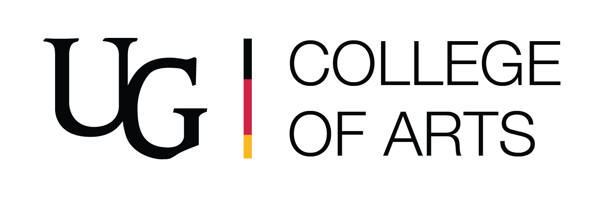
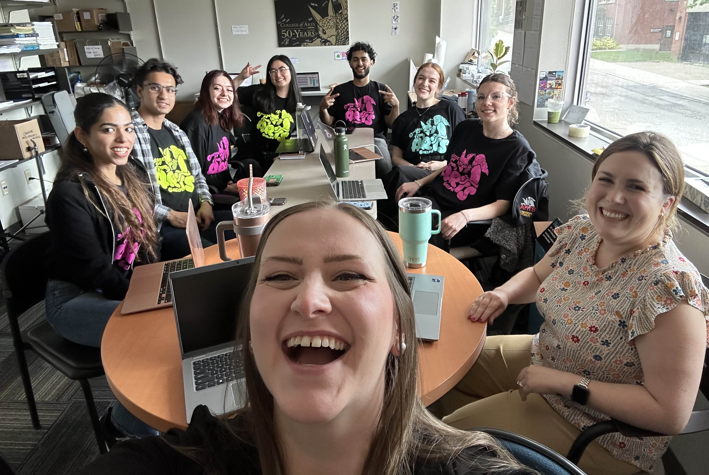
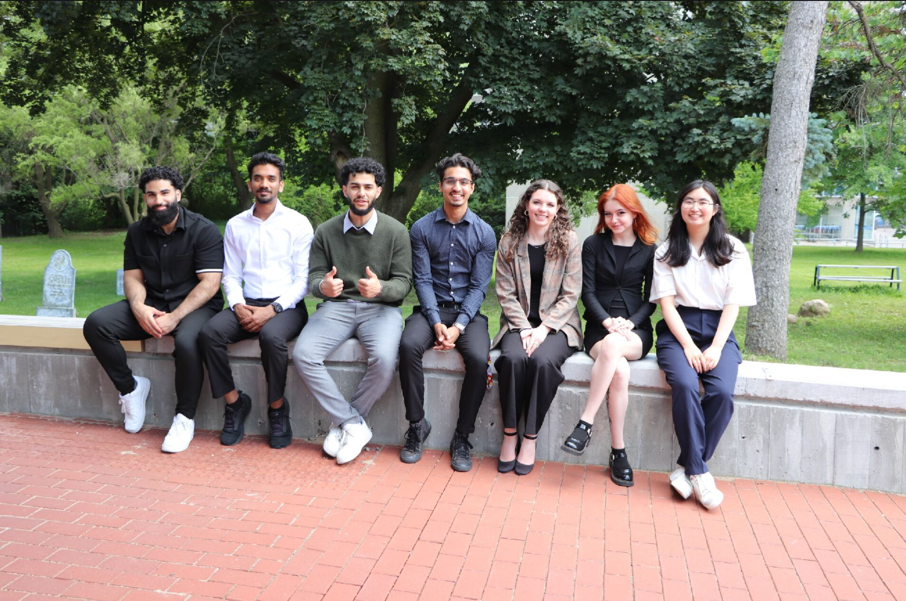
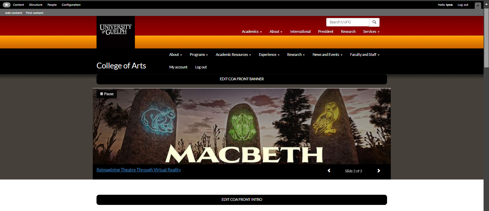
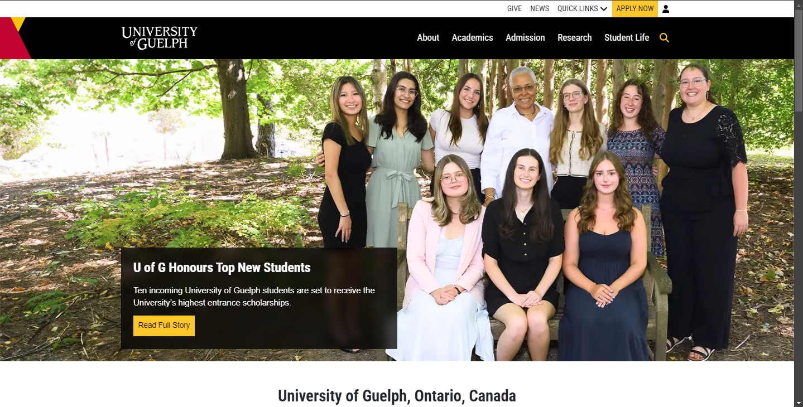
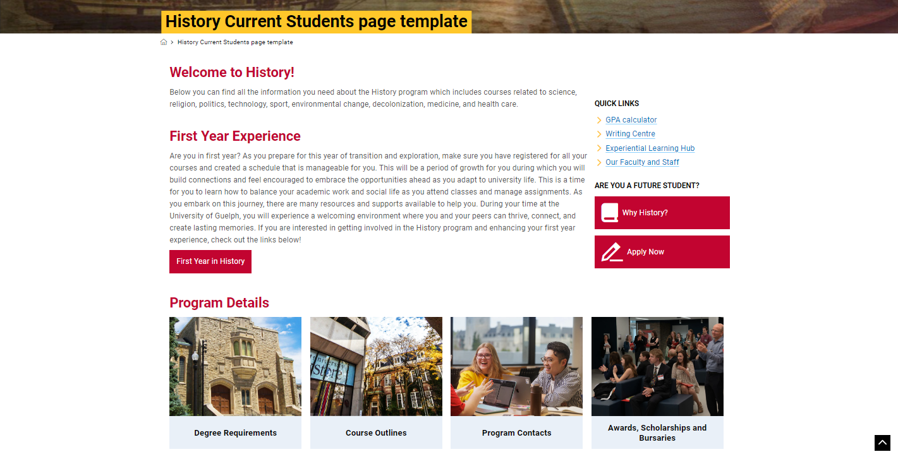
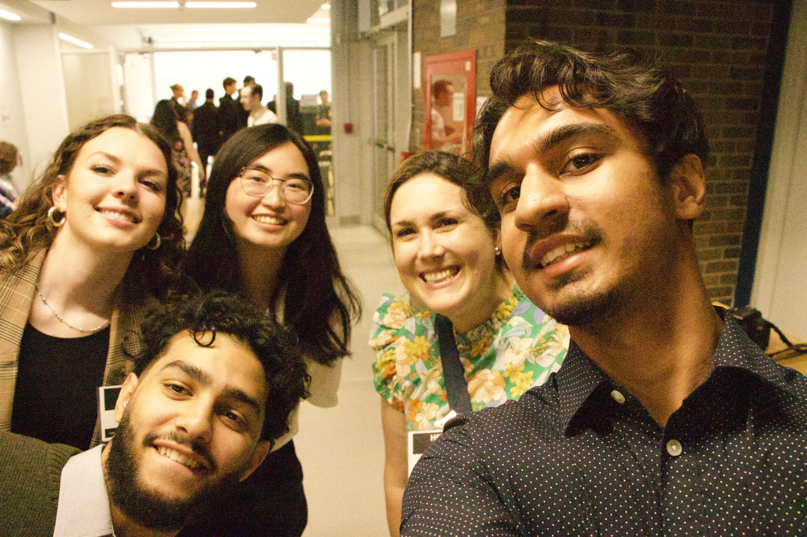
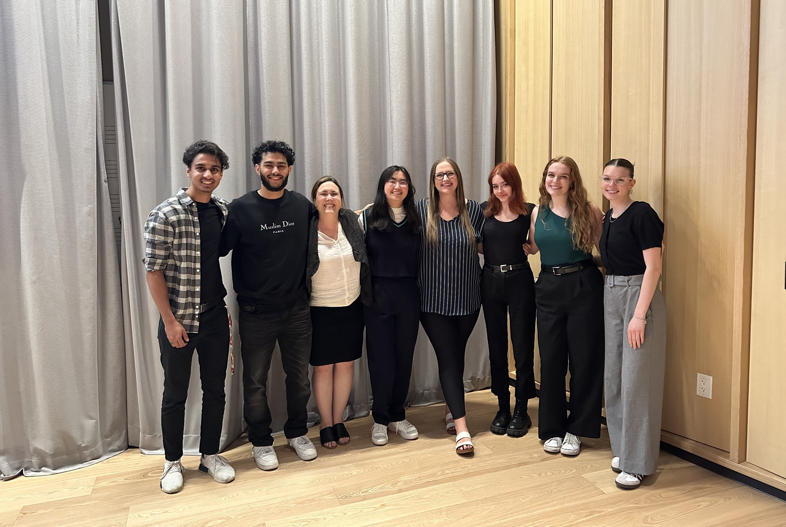
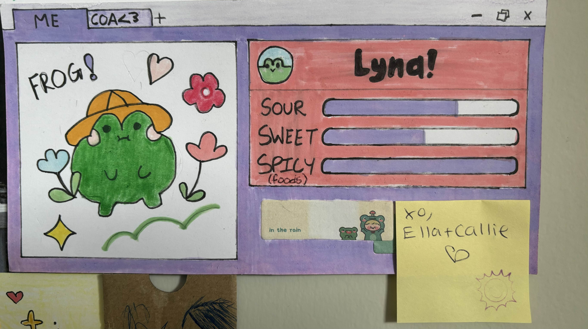

Work Term Report 1
Introduction:

For my first Co-op term, I landed a role within the University, at the College of Arts, as a Website Redesign Coordinator for eight months! Beginning with a team of eight, turned 11 in June, the College of Arts Marketing and Communications team was at its largest and peaked in productivity. Through this experience, I’ve learned so much about web design, user experience, and professional skills— and also made many friends along the way! This role has impacted me greatly, and I can't wait to tell you all about it.
About My Team:


Our Marketing and Communications team is located within the Dean’s Office at the College of Arts, University of Guelph. Our team acts as a support unit for the College of Arts and provide marketing, communications, recruitment, and web services to college stakeholders. Both internal and external, our stakeholders include students, staff, faculty, donors, alumni, etc.
Being in a Marketing and Communications team for a college, our team has various responsibilities and projects. There are two main services and sub-teams that make us whole; the marketing and communications team and the web team. Having gained a website role, I fall within the web team!
✉️ The marketing and communications services include…
- Strategic marketing and communications planning for the College of Arts
- Hosting/taking lead in university- and/or college-wide events for the College of Arts
- Newsletters and story pieces
- Social media and digital media communications
- University and college branding guidelines
💻 While the web services provide…
- Website and intranet structure strategy and development
- Users experience strategy and development
- Web system (Drupal 7, Drupal 9/Content Hub, SharePoint) support for the college’s students, staff, and faculty
- Strategic recruitment and communications web pieces for future, current, and graduate students
Due to financial and restrictive limitations, our team aims to be innovative and effective with each of our projects and actions. Despite having two divisions, our sub-teams often collaborate with one another to develop and deliver innovative projects. For example, aiming to convince prospective arts students to accept and commit to their offer at the University of Guelph, our marketing and communications division were the first to create pieces to do so among the colleges. Named MELT, representing the decrease in incoming students due to last minute rejections, the communications team wrote interesting and fun copies catering to each art program and its prospective students. Having the completed MELT copy for each program, the web team then developed web pages for each-- such that our audience may aesthetically view and interact with our content!
Even when innate teams and individuals have their own specific responsibilities and services, we all share one goal; to build recruitment and retention among our audiences, and to support the college through external and internal communications.
Role: Website Redesign Coordinator
Over the past four months, I have researched, created, edited, and maintained web pages for the College of Arts! Our web team works with three main systems:

Drupal 7 is the University of Guelph’s former content management system and is where majority of the College of Arts web pages live. Both faculty and staff have access to create and edit pages, while our web team are the only ones to have Site Manager access. Hosting ~5000 pages for the Arts, Drupal 7 contains both internal and external content.
Skills and Technical Aspects:
- Content management system that allows for a lot of customization using HTML and CSS
- Web design and development (Wireframes, visual literacy, branding, etc.)
- User experience and journey
- Graphic design / image editing via Canva
- Accessibility/AODA/WCAG

Drupal 9, also known as Content Hub, is the University of Guelph’s current content management system. After building websites on Drupal 7 for years, the University is upgrading to Drupal 9 and transitioning to a modern appearance with better user-experience and interface. Designed for external and public-facing content, Drupal 9 is only managed by the Marketing and Communications teams of each department.
Skills and Technical Aspects:
- Content management systems with little coding access (HTML, CSS)
- Site structure and navigation planning for the College of Arts
- Web design and development (Wireframes, visual literacy, branding, etc.)
- User experience
- Graphic design / image editing via Canva
- Accessibility/AODA/WCAG
As Drupal 7 nears its end, my main project this summer was the Web Migration from Drupal 7 to Drupal 9 and SharePoint. This on-going project, having so many components and complexities, involved a lot of planning, organization, research, and project management. The web team and I thoroughly went and are currently going through Drupal 7 Arts pages, reading all their content and deciding where the information belongs. The following table summarizes a small part of the process and decision-making:
| Page Content on Drupal 7 | Audience | Migration |
|---|---|---|
| Relevant | External / Public-Facing | Drupal 9 |
| Relevant | Internal | SharePoint |
| Irrelevant | External or Internal | Delete during the migration |
However, the web team and I also worked on many projects and pages aside from the migration initiation! Our team’s primary goal is to innovate and support the College of Arts community-- students, faculty and staff alike. To do this, we have improved existing pages (both on Drupal 7 and 9) and have also developed brand new pages on Drupal 9. For example, I have been working on a Current Student page template that will be a directory for everything a student may need regarding their program.

Additionally, I have also assisted with projects and events lead by the marketing and communications side of our team! Such as helping with the College of Arts Award Ceremony S24 and Academic Orientation.

Goals and Reflections
Goal 1 🎯
Right at the beginnin, I wanted to improve my confidence and ability to effectively articulate my speech in business settings. Although I consider myself a strong communicator, I often worry and overthink when it comes to oral communication which effects how I may convey ideas and thoughts.
Reflection ✅
I believe that I have developed and improved my oral communication skills! Throughout this term, I have attempted to be more aware of my thoughts and behaviours during business meetings and talks. When called upon during meetings and reacting with nervousness or fear, I try my best to be aware of how I am feeling and calm myself down. Through calming myself and, in turn, slowing my stream of thoughts, I was able to speak more coherently. As each meeting passed, the more I wanted to, and did, initiate speaking up! To help prepare myself and boost my confidence, I also wrote notes and planned what I wanted to convey beforehand. This allowed me to speak in meetings with more confidence, as I already had a clear idea of what I wanted to say and how.
Additionally, before meetings I made sure that I was knowledgeable and updated on focused topics and projects. Not only am I able to speak more confidently on my own, but I am also able to jump into conversations to provide helpful input. While talking, if I make any mistakes (wrong words, stuttering, etc.), I have learned to keep moving forward in a professional and confident manner, as well. When I first started this co-op term, I was always hesitant and intimidated to speak in daily meetings and lacked confidence in what I knew and how I could convey it. However, I now volunteer to speak up for my team and update those outside of it with our projects!
My development, especially the mental aspect of it, also improved greatly because of my team's kind and accepting environment. Through their outstanding support and belief in me, I learned that my knowledge and voice is important and contributes to those around us. In meetings or business socials, my team often encourages me to go outside of my comfort zone and inspires me to initiate and do so. As this is my first co-op term, I am so grateful that I landed in a team that supports me so much and helps me grow in such a healthy, organic way. Through these improvements, I will be able to transfer these communication skills to any other roles and positions as oral communication is a major aspect in any work environment.
Goal 2 🎯
I looked forward to learning and building upon how to create and implement innovative ideas for various issues. I wanted to strengthen my ability to think innovatively and outside of the box, such that I may effectively tackle different types of issues and scales.
Reflection ✅
Throughout my position and our team's various projects, my ability to think innovatively has grown lots! Being in a Marketing and Communications team, our projects have very specific audiences, each with their own needs and quirks. Creating web pages for current students, graduate students, and prospective students forced me to think deeply about the who, why, and how. Every decision made had deep thought and intention— including how I implemented and executed tasks themselves.
For example, the Current Students template acts as a directory in everything they may need to know about their program. As each program would include a lot of information and unique pieces, and perhaps even needing additional pages to be created, I had to create an efficient and effective plan. Additionally, while creating and modifying our template, I had to contemplate how to fully utilize the web system to fit our vision, while staying within the system's limitations. Working on this specific project allowed me to experiment with my ideas and explore what worked and what didn't—preparing me for future projects such as graduate program pages. If we wanted to implement a specific feature but couldn't, I was able to think of creative alternatives that allowed us to convey the same message. I learned the different ways I could utilize and implement straightforward widgets, and especially how to connect and innovate my ideas, intentions and execution.
I am especially happy regarding this development, as innovation and creativity are valuable traits in work environments that aim to change and grow despite limitations.
Goal 3 🎯
I wished to learn how to use prominent web tools such as Drupal 7 and 9 and gain proficiency in each! Through learning these tools, I looked forward to gaining skills and knowledge for web design principles and user experience.
Reflection ✅
When I first started this position, I viewed websites mostly through a technical lens. This mainly included technical features, aesthetics, etcetera, but not on how they showcased and conveyed information. However, through working within a Marketing and Communications team, I have learned so much about User Experience (UX) and websites as recruitment pieces.
My main project throughout this term was to begin the migration between our different university website systems. The original system, Drupal 7, is where majority of the College of Arts pages live. However, the navigation and UX of these pages are confusing and convoluted. The content itself is often conveyed and showcased through wordy paragraphs, zero visuals, and outdated information. As many of these pages are targeted towards students of various generations and levels, they are an unpleasant method to gain information despite being the only option. I learned how certain decisions, features, and elements contributed to UX negatively.
Through Drupal 9, the new and current system of the university's web, I have also learned how these cons may be improved and neatly designed. Working on the migration from Drupal 7 to Drupal 9, I experienced first-hand how the UX improved from the old to the new as a user and developer. Additionally, having both the technical and content/recruitment point-of-view, I learned and gained experience in web principles and design. This includes how we should implement certain features for accessibility, cohesion, and visual literacy. For recruitment pieces, this also includes deeply considering the language, format, and size of the information we want to convey to our audiences.
Overall, I gained so much knowledge on how websites are created, function, and managed through all of its different aspects and parts. I learned small, technical details to large, conceptual elements and how each aspect effects the experience of our user/client. I am so grateful and happy to have my view and experience in web expanded, such that I may transfer this knowledge to any other positions in this field! It has really made me appreciate all the work, thought, and intent that goes into technically developing a page and managing all the content within.
Conclusions and Acknowledgments



Being in this role and working in the Marketing and Communications team at the College of Arts has been an amazing experience thus far, and I am so excited to keep working with them in the fall term!
I enrolled into Computer Science without any coding experience besides basic HTML, which I enjoyed doing! Since then, only having touched front-end through personal hobbies and CIS*2750, it was really interesting and fun seeing how I could apply a nd build upon skills and knowledge such HTML, CSS, user experience, etc., in a professional and public-facing setting. Rather than designing for my satisfaction and experience, I had to learn how to design from a recruitment point-of-view and deeply consider specific audiences. I learned a lot about the process of researching and planning the “WHY” and intentions of a page, the wireframing and designing of a public-facing page for certain demographics, and the organization of its content, links, and visuals.
Additionally, thanks to the support of my supervisor, Rachel, and coworkers, I have also grown in professional skills such as communication and have developed my skill set with more confidence! My team in the College of Arts have been so amazing and are one of the main reasons why I love going into work. The work environment is so positive and supportive, and being with such a generous and open team has inspired me to improve and grow not only for myself but to support them as well! They’ve made every project fun and exciting, and I genuinely just love being in everyone’s presence as we have all become good friends. I cannot thank my team enough; Rachel Ruston, Kate Tschirhart, Callie Gibson, Ella Holt, Marissa Ellis, Muhammad Uzair, Yousef Al-Kharraz, Amro Abedmoosa, and Sulakshan Sivakumaran! Of course, this extends to the College of Arts Dean's Office, as well.
I also want to thank Laura Gatto, who has been so kind and supportive during my work term!